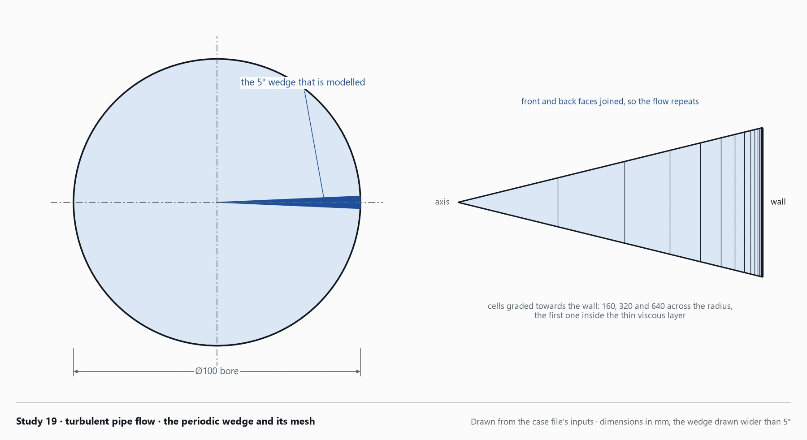

The Question
Can this OpenFOAM turbulence setup (the k-omega SST model) be trusted for pressure-drop budgets, such as a coolant line? The requirement: the pipe friction factor within 5 % of Prandtl's smooth-pipe law, the fit to Nikuradse's measurements behind the Moody chart. It's the portfolio's first comparison with measured data, through that correlation.
The Answer
Yes, with the thin layer of flow at the wall resolved. Converged, the friction factor at a Reynolds number of 10⁵ is 2.4 % above Prandtl's law, with 0.5 % mesh uncertainty, well inside the 5 %.
The cheaper option, wall functions, sits about 5 % low whatever the mesh and wherever the first cell is placed, so it can't be used to 5 %.
Why It Matters
Every study before this one has laminar flow, where the equations can be solved exactly and the model either matches or it doesn't. Most real flows are turbulent, and turbulence can't be solved directly at engineering scale. A turbulence model stands in for it, and a model is an approximation with its own error, separate from the mesh error. So the question changes from "did I solve the equations right?" to "are these the right equations?", and only measured data can answer that.
Pipe friction is the place to start because it has been measured more carefully than almost anything else in fluid mechanics. If a setup can't reproduce it, there's no reason to trust it on a harder flow.
The Model
- Geometry
- A smooth pipe, 100 mm bore, modelled as a thin 5° wedge one cell thick, with its two ends joined so the flow repeats. That gives fully developed flow with no inlet to model.
- Fluid and flow
- Kinematic viscosity 10⁻⁶ m²/s (water). The mean velocity is held fixed, and the solver reports the pressure gradient needed. Reynolds numbers from 2 × 10⁴ to 2 × 10⁶.
- Turbulence model
- k-omega SST, a widely used two-equation model, as implemented in OpenFOAM 14.
- Wall treatment
- Two options, compared. Resolved: cells fine enough to capture the thin viscous layer at the wall (first cell at y+ below 1). Wall functions: a coarser mesh that bridges that layer with a formula (first cell at y+ 30 to 200).
- Mesh
- 80 to 640 cells across the radius, graded towards the wall. Every level halves every cell.
- Analysis
- Steady Reynolds-averaged (RANS) flow.
- What's measured
- The Darcy friction factor, the number a pressure-drop calculation uses.

The case file: recorded assumptions, limits and inputs
This is the study's own record, written before the run and saved with it, in the shorthand of the case file.
cases/pipe_rans_mesh_r2.toml ↗
Fully developed turbulent pipe flow, Re 1e5 (D 0.1 m, nu 1e-6 m^2/s), axisymmetric periodic wedge, RANS k-omega SST, low-Reynolds wall treatment; mesh study on the radial cells (80 / 160 / 320, wall cell halved with them); friction factor against Prandtl's smooth-pipe law.
Assumptions, and How Each Is Checked
- Fully developed, steady, incompressible, axisymmetric mean flow in a hydraulically smooth pipe.
- RANS with the k-omega SST model (openfoam.org v14 coefficients); its form error is what this study measures.
- Hydraulic diameter of the wedge 2 R cos(2.5 deg) (its wall is a flat face): 0.1 % below D, used consistently.
Limits
- Smooth walls only; roughness (the Colebrook range) not modelled.
- The reference is a correlation of measurements (about +-2 % scatter in Nikuradse's smooth-pipe data), not the measurements themselves.
Inputs
| Input | Value |
|---|---|
| diameter_m | 0.1 |
| reynolds_number | 100000 |
| kinematic_viscosity_m2_per_s | 1e-06 |
| n_radial | 80 |
| first_cell_yplus | 0.5 |
| wall_treatment | low_re |
| turbulence_model | kOmegaSST |
How It Works
Because the wedge's ends are joined, the flow that comes out is the flow that goes in, and the solution settles into the fully developed state a long pipe would reach. A momentum source holds the mean velocity at the requested value and reports the pressure gradient it had to apply. The friction factor follows directly from that gradient.
Three studies make up the answer: a mesh study at one Reynolds number, a sweep across Reynolds numbers, and a wall-function study that moves the first cell in and out to see whether its placement can fix the offset.
How I Checked It
- An exact force balance. In steady flow the friction on the wall and the applied pressure gradient must balance exactly, which gives the friction factor two independent ways. They agree to 10⁻⁹ or better on every converged mesh, and they disagree on an unconverged one, so the same check catches runs that haven't finished.
- The reported value isn't one mesh. Every mesh level halves every cell, and the reported value is the one extrapolated to an infinitely fine mesh.
- The model is used where it's valid. The first cell sits where each wall treatment needs it, and the velocity profile follows the log law, the standard shape of a turbulent profile near a wall, within 2.5 to 3.4 %.
- The flow is settled. The mean velocity is held to 10⁻¹³, the wall shear is uniform along the wall, and the pressure gradient changes by under 10⁻⁸ over the last tenth of the run.
What I Caught Along the Way
- A good agreement that was mesh error. The first mesh agreed with Prandtl to 0.9 %, which looked reassuring and was wrong. Refining moved it to +0.7 % and then +1.6 %, converging at only first order, and the converged answer is 2.4 % above the law. Quoting the first mesh would have got the sign of the error wrong.
- A fix that broke convergence. At the highest Reynolds number the mesh checker flagged very long, thin cells. Shortening them removed the warning and left the converged answer unchanged, but it slowed the solver by orders of magnitude: a mesh that had converged in 15,000 iterations no longer converged in 80,000, and its unconverged result even looked plausible. The force balance exposed it, and I went back to the original mesh, which converged in minutes.
- A suspect that wasn't guilty. The wall-function offset first looked like a coarse mesh in the core of the pipe. Four times the cells moved the answer by 0.1 %, and a placement sweep confirmed the wall treatment itself is the cause.
Limits, and What I'd Do Next
- Smooth walls only. Rough pipes, the Colebrook range of the Moody chart, aren't modelled.
- The reference is a correlation of measurements, with about ±2 % scatter, not the raw measurements.
- One turbulence model. Others would give somewhat different offsets.
- The first converged mesh study (80, 160 and 320 cells) left a mesh uncertainty of 1.05 %, just over the 1 % I set, so the pass was formally unverified. One finer level (640 cells) brought it to 0.5 % with the same answer, and it's now verified.
- Part 2 compares the same setup against measured velocity profiles behind a backward-facing step, a flow that separates and reattaches. It's waiting on the data source, whose servers were unreachable on 22 November.
Evidence
Run reports, with every check and the saved inputs